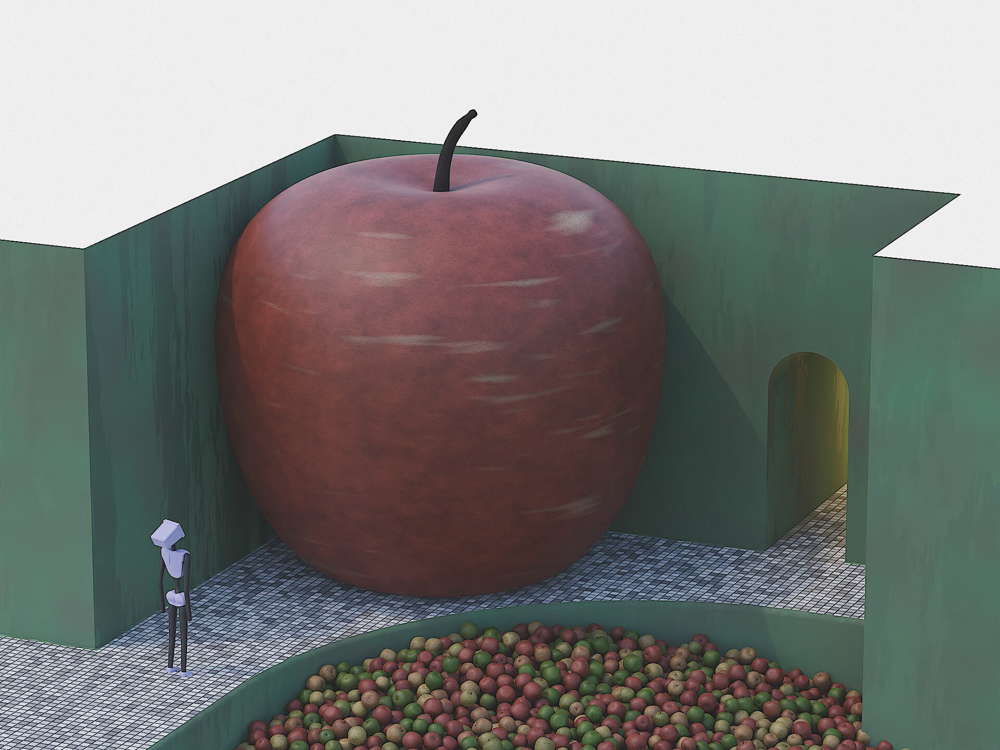

this is a digital artwork i created using Blender for an open call for submissions held by Tate Collective in August 2022, on a brief of 'Cyborg Futures'.
my piece was selected to be exhibited in the Tate Britain in London alongside around 80 others.
i created every part of the work from scratch, including modelling and rigging the robotic arm, designing the materials, and developing a complex compositing process to produce the stylised 'graphite' overall look. you can see more about my graphite style projects here.
Tate Britain

this piece was my submission for another open call held by Tate Collective, this one in November 2022, celebrating the work of Paul Cezanne.
it was selected along with just 9 others to be exhibited in the Tate Modern in London.
the character shown in the bottom left was something i challenged myself to model and rig for a previous project. the apples in the well in the center were placed with a combination of physics simulation and manual manipulation. the materials on the walls, apples, floor, etc, were of course all procedurally created within Blender
Tate Modern